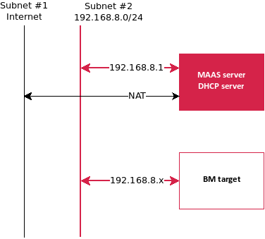
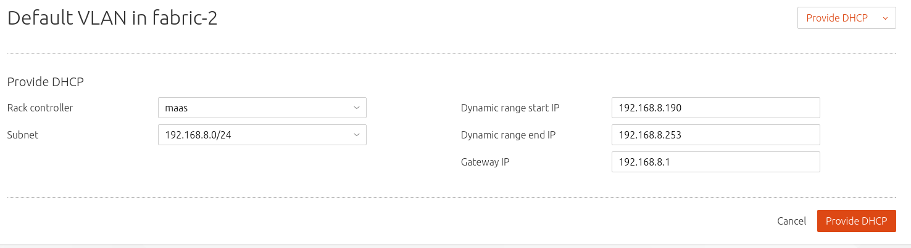
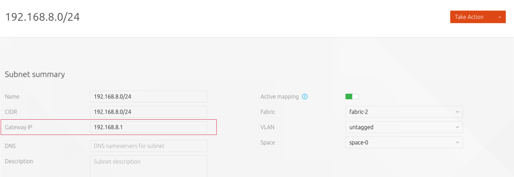
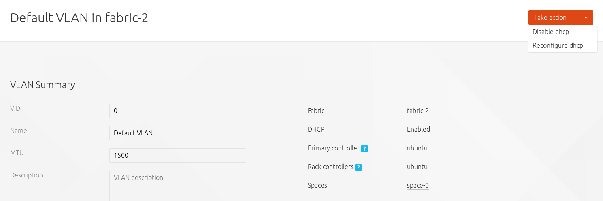

Copyright @ Lenovo US
Canonical MAAS is a deployment tool that can give a bare metal
life by putting an OS on it. Working together with Juju, they can
setup a cluster of applications quite quickly. Think of them as a
package manage like Ubuntu's apt-get, but in the context of a
cloud. Interesting.
This article shows how to setup a virtual lab so one can play with these two tools and get a sense of what they do. The whole setup is based on Virtualbox. One thing I found out the hard way is that despite their nice looking website and rather recent project history, there is no single document that can bring this environment live from A to Z. All official documents have out-of-date commands here and there which made following them useless. I consulted countless blogs, posts, chasing down bugs (or I thought they were bugs), and finally when everything works, it became so obvious and simple. Hopefully this article will shorten this journey for readers and they can have this environment easily.
Baseline environment
Virtualbox 5.1.10 and its extension pack. I could not verify why this particular version worked. I had 5.1.8 and the first successful trial occurred after I upgraded to 5.1.10. Was that a coincidence? Without being able to reproduce this, I am merely documenting what I have.
Network topology
Getting network configurations right is the key for success. The biggest gotcha is that MAAS server must be the DHCP server on its managing subnet! The official document talks about "if there is an existing DHCP, points it to the MAAS server", huh? I never figured that out, so don't listen to that.
There will be two VMs and one internal network, intnet1.
- VM #1: is the MAAS server. Use Xenial 16.04 desktop image.
- VM #2: is an emulated BM.
intnet1: is a subnet (192.168.8.0/24) that MAAS server will live together with its managed nodes (I call them targets).

Setup instructions
Personally I dislike those step-by-step instructions because first of all, it is intimidating; secondly, each environment is a bit different, so how confident user will feel to duplicate other's success? Not much. I'll explain thoughts and lessons learned along the way. I think that is more useful even from the point that Google may pick up a few words here and will help others if they search.
Install MAAS server, admin account, subnet
MAAS server uses Ubuntu 16.04 Xenial image. Setup the
networking to have two interfaces — one uses default NAT so you
have internet access, while the other uses Internal Network with
name intnet1.
Defining the subnet managed by MAAS server is the most imporant step in MAAS configuration.
-
Config subnet
intnet1. Define it as192.168.8.x(This is completly arbitrary. Use whatever network range you want to use). Useifconfigto find out interface name that corresponds tointnet1(a clue: the one that has no IP assigned):```shell $ nano /etc/network/interfaces auto enp0s9 iface enp0s9 inet static address 192.168.8.1 netmask 255.255.255.0 gateway 192.168.8.1 # this will be setup in MAAS as default gateway! ```
At Virtualbox level we have added an interface to this VM using
Internal Network, we need then define this network in VM. Also, defining this before installing MAAS will have MAAS installer pick up this subnet automatically so to save some manual work down the road. -
Install MAAS is simple. Don't bother with other methods.
```shell sudo add-apt-repository ppa:maas/stable sudo apt update sudo apt install maas ```
-
Create MAAS admin:
```shell sudo maas createadmin ```
-
Create SSH key and copy content from
~/.ssh/id_rsa.pub:```shell mkdir .ssh ssh-keygen -t rsa less ~/.ssh/id_rsa.pub ```
-
Login in
http://localhost:5240/MAASusing admin created in step 3, goto user preference (click user name). selectuploadand paste step 4's content into the text box. This is the public key that will be copied to each MAAS target at deployment so later you can SSH into these targets without knowing the password.
MAAS upload SSH key -
Setup MAAS gateway. This was actually asked when installing MAAS server. But I missed this and ended up spending 5 days debugging a strange issue where provisioned node can not ping outside world. In short, set MAAS default gateway to be the IP of the MAAS server, in our case,
192.168.8.1!
MAAS default gateway
At this point, the MAAS server is installed and user can login the web admin console. Next, setup firewall rules on MAAS server so it can be the router for managed subnet.
MAAS server firewall rules
Install UFW. UFW is infinitely easier to use than iptables. Making the MAAS server as a router is necessary because targets, once acquired an OS, will need internet access in order to APT other things. (If using real metal server, the server can be connected to multiple VLANs among which one is providing internet access.)
Masquerading
Following the instructions to enable default port forwarding:
-
Packet forwarding needs to be enabled in ufw. Two configuration files will need to be adjusted, in
/etc/default/ufwchange theDEFAULT_FORWARD_POLICYtoACCEPT:```shell DEFAULT_FORWARD_POLICY="ACCEPT" ```
-
Then edit
/etc/ufw/sysctl.confand uncomment:```shell net/ipv4/ip_forward=1 net/ipv6/conf/default/forwarding=1 ```
Firewall policies
Enabling UFW will deny all access (except the current ssh session). So before anything, allow port 22!
To config MAAS server to route 192.168.8.x subnet traffic to internet
using UFW is simple. Using ifconfig to find the interface name that
is connected to the internet(NAT), in this example, enp0s3:
```shell
nano /etc/ufw/before.rules
```
Paste this at the bottom of the file, after the COMMIT that has
already been in that document:
```shell
# nat Table rules
*nat
:POSTROUTING ACCEPT [0:0]
-A POSTROUTING -s 192.168.8.0/24 -o enp0s3 -j MASQUERADE
COMMIT
```
What this does is to make enp0s3 as the router for subnet
192.168.8.x ← welcome the internet!
Ports
UFW will erect a firewall that blocks everything by default! We have poked holes for port 22 to allow SSH. More need to be done:
- Allow http 80: ufw allow http
- Allow ping: ufw allow 53
- Allow region controller API port: 5240
- Allow Bootp server and client: 67, 68
- Allow Img service: 5248
- Allow tftp: 69, 5244
- Allow domain service: 5246
- Allow rndc service: 5247
- Allow iscsi: 3260
- Allow ntp: 123
- Allow MAAS bootstrap sever: 8000
Finally, sudo ufw enable. Our GFW is up.
MAAS as DHCP server
As I have mentioned, the MAAS server node must be the DHCP server on subnet 192.168.8.x. No exception!
MAAS admin web is the tool to use for this configuration.
-
Login into
http://192.168.8.1/MAAS/, gotoSubnetsand select theVLAN← this is how you can turn on DHCP on a subnet:

MAAS DHCP config -
Click
Vlancolumn on192.168.8.0/24subnet row to get to the Vlan configuration page.Take actionto enable DHCP. Change the gateway to 192.168.8.1, which is this server's static IP on this subnet.
MAAS admin DHCP config
We have done the hard part — setting up the MAAS server. In our next article, I'll show you what MAAS can do for fun → brining up a bare metal machine to life. Stay tuned.
— by Feng Xia